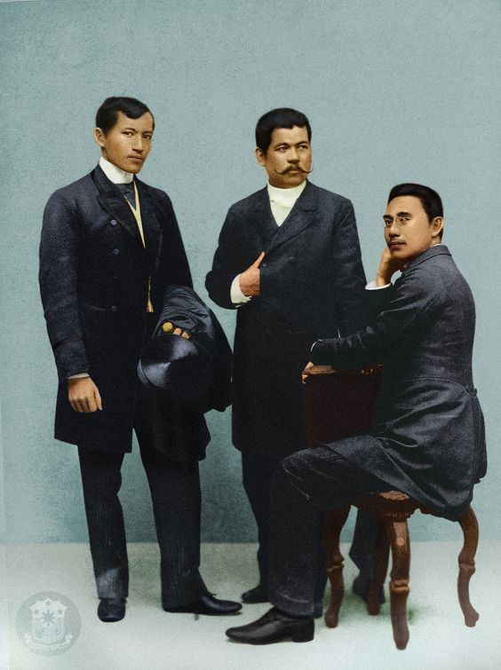
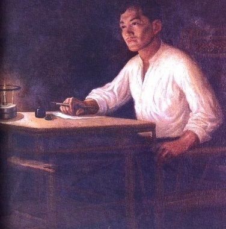
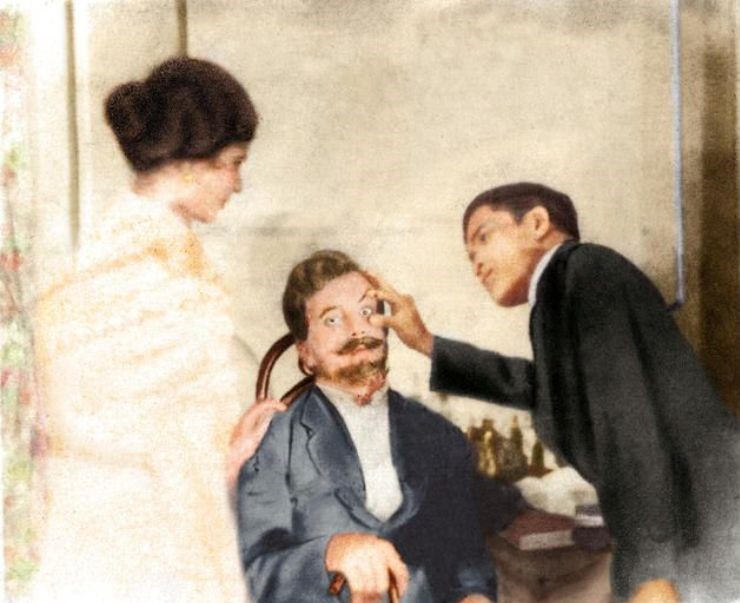
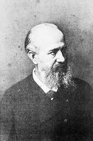
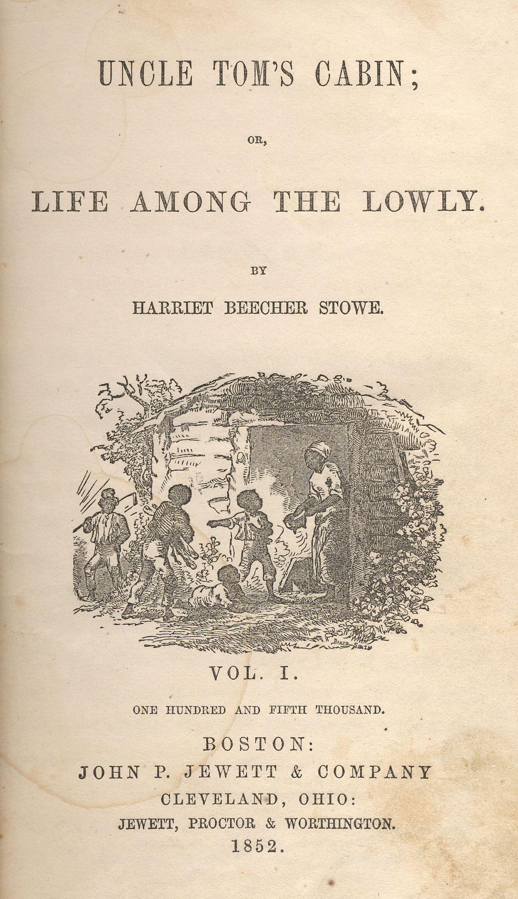

RIZAL'S LIFE AND WORKS
Rizal's Life Abroad

Rizal's Life Abroad
Rizal began writing farewell letters to his friend and family. Paciano gave him money for his allowance Saturnina gave him a diamond ring.
Rizal left the Philippines for the first time to Spain boarded on the Salvadora bound for using a passport of Jose Mercado, which was procured for him by his uncle Antonio Rivera, father of Leonor Rivera. He was accompanied to the quay where the Salvadora was moored by his uncle Antonio, Vicente Gella, and Mateo Evangelista.
Salvadora docked in Singapore and stayed in Hotel Dela Paz for two days. In Singapore, Rizal transferred to another ship Djemnah, a French steamer, which left Singapore to move in Europe on May 11, 1882.
Rizal arrived at Punta de Gales to go to Colombo and Rizal wrote on his travel diary: The general appearance of Punta de Gales is picturesque but lonely and quiet and at the same time sad.
He landed at Aden, Yemen at about 8:30 am. He made observation at that time. Aden is a city hotter than Manila. Rizal was amused to see the camels, for the first time. The port of Aden, Yemen is important for the US Navy fleet. It was an important port of call in the 1880's. Steamers coming from Asia load coal from this port before proceeding on to the Suez Canal on the way to Europe.
A In Rizal's letter to his family he notes the heat: "The ground, like the sun, is hot and hard, the wind, loaded with burning sand, disturbs now and then the quietness of its well made and deserted streets." He said that only men can live there because "everywhere else is death, neither a root nor a leaf" can exist in Aden's environment.
Rizal disembarked and accompanied by a guide, went around the City of Naples for one hour. This was the First European ground he set foot on. Rizal was pleased on this Italian City because of its business activity, its lively people and its panoramic beauty.
At 10 o clock in the evening, the boat anchored at Marseilles. He slept in board. Rizal visited the famous Chateau d If where Dantes, hero of the Count of Monte Cristo was imprisoned. Rizal stayed two and half days in Marseilles.
At 12:00 noon, Rizal arrived at Barcelona and boarded in the Fonda De España. Rizals first impression of Barcelona, the greatest city of Cataluña and Spains second largest city was unfavorable
His next article was entitled Los Vlajes (Travels) and followed by Revista de Madrid (Review of Madrid) but the latter was returned because the publication was ceased because of lack of funds.
His article Amor Patrio was published in the Diariong Tagalog, a Manila newspaper edited by Basilio Teodoro. This was the first article he wrote abroad.
Amor Patrio (Love of Country): Nationalistic essay, Rizals first article written on Spain’s soil. Under his pen-name Laong Laan. It was published in two texts Spanish and Tagalog. The Spanish text was the one originally written by Rizal in Barcelona the Tagalog text was a Tagalog translation made by Marcelo H. Del Pilar.
Rizal moved heading to Madrid in order to continue his medical studies.
Rizal enrolled at the Universidad Central de Madrid. In two courses Medicine and Philosophy and Letters.
Academy of Fine Arts of San Fernando Rizal studied painting and sculpture He took lesson in French, German and English under private instructors He practiced fencing and shooting at the Hall of Arms in Sanz y Carbonell.
Rizal joined the Circulo Hispano Filipino. It is an association formed by Filipino students in Spain composed of both Filipinos and Spaniards
Mi Piden Versos (They Ask Me for Verses) upon the request of the members of this society, Rizal wrote this poem which he personally declaimed during the New Years Eve reception held in the evening of December 31, 1882.
He joined the Masonic Lodge called Acacia. His Reason for was to secure Freemasonry’s aid in his fight for the Philippines.
He transferred to Lodge Solidaridad, where he become a Master Mason.
Rizal finished his medical education. He was conferred the degree of Licentiate in Medicine. The next year, he passed all his subjects leading to Doctors of Medicine but was only able to get his Doctor’s Diploma in 1887 for he wasn’t able to pay corresponding fees.
Rizal was awarded the degree of Licentiate in Philosophy Letters by the Universidad Central de Madrid with the rating of Excellent (Sobresaliente)
Rizal went to Paris and Germany in order to specialize in Ophthalmology Rizal chose this branch of medicine because he wanted to cure his mothers eye ailment.
Dr. Louis De Wecker He is the leading French Ophthalmologist during this period. He is the leading authority among the oculists of France, who found Rizal such a competent student and make him as his Clinical Assistant.
During his free time, he visited his fellow countrymen Pardo de Taveras (Trinidad, Felix and Paz) and Juan Luna. Rizal posted in Lunas canvas like The Blood Compact in which he posed as Sikatuna and Trinidad as Legazpi. He also posed for a group picture called The Death of Cleopatra wherein he dressed as an Egyptian.
He left to Germany and arrived on February 3, 1886 in Heiderberg a historic city in Germany famous for its old university and romantic surroundings.
Distinguished German Ophthalmologist where Rizal worked University Eye Hospital
Rizal arrived in Berlin. He was enchanted by the scientific atmosphere and the absence of racial prejudice in Berlin.
Rizal met Dr. Feodor Jagor great scientist and author of Travels in the Philippines one of the books Rizal admired during his student days. He also met Dr. Rudolf Virchow known to be the Father of Modern Pathology
One of Rizal’s important letters written while he was in Germany that addressed to his sister. Trinidad. In his letter, Rizal expressed his high regard and admiration for German womanhood The German woman, said Rizal to his sister, is serious, diligent, educated and friendly. She is not gossipy, frivolous and quarrelsome.

The bleak wnter of 1886 in Berlin was Rizal’s dark set winter because no money arrived from Calamba and he was flat broke. The diamond ring which his sister, Saturtina, gave him was in the pawnshop. It was memorable in the life of Rizal for two reasons:
1.It was a painful episode for he was hungry, sick and despondent in a strange city;
2.It brought him great joy after enduring so much sufferings, because his first novel, Noli Me Tangere came off the press in March, 1887.
Rizals friend from Bulacan, arrived in Berlin at the height of Rizal despondency and loaned him the needed funds to publish the novel; Savior of Noli
It inspired Dr. Rizal to prepare a novel that would depict the miseries of his people under the lash of Spanish tyrants.
Berliner Buchdruckei- Action- Gesellschalft A printing shop which charged the lowest rate, that is , 300 pesos for 2,000 copies of the novel.
The Noli Me Tangere came off the press the title Noli Me Tangere is a Latin Phrase which mean Touch Me Not. It is not originally conceived by Rizal, for he admitted taking it from the Bible. Rizal and Viola left Berlin by train going to Dresden. One of the best cities in Germany
At 1:30 pm May 13, 1887 the train, with Rizal and Viola on board, arrived at the railroad station of Leitmeritz, Bohemia for the first time, the two great scholars Rizal and Bluementritt met in person
Rizal and Viola arrived in the beautiful city of Vienna, capital of Austria Hungary Vienna was truly the Queen of Danube because of its beautiful building, religious images, haunting waltzes and majestic charm.
The largest and tallest Cathedral in Germany. From Ulm, they went to Stuttgart Baden and the Rehinfall At rheinfall, they saw the waterfall, The most beautiful waterfall of Europe.
The Swiss City is one of the most beautiful cities in Europe, visited by world tourist every year. June 19, 1887 - Rizal treated Viola to a blow-out. It was his 26th birthday. Rizal and Viola spent fifteen delightful days in Geneva.
The Feast Day of St. Peter and St. Paul, Rizal visited for the first time the Vatican, the City of the Popes and the capital of Christendom. Every night, after sightseeing the whole day, Rizal returned to his novel, very tired. I am tired as dog, he wrote to Blumentritt, but I will sleep as a God.
Copyright © 2024 - All Rights Reserved -